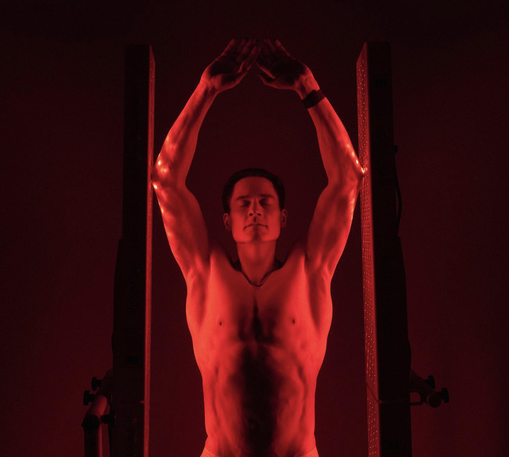

Investigación
La terapia de luz roja e infrarroja se presenta como una herramienta terapéutica poderosa para el manejo de lesiones y apoyo a diferentes condiciones. Su capacidad para estimular la regeneración celular, reducir la inflamación y mejorar la circulación sanguínea la hace útil para deportistas, personas en recuperación quirúrgica y aquellos que enfrentan condiciones crónicas.
La terapia de luz roja atraviesa las células, penetrando las mitocondrias. Mejora la función celular gracias al incremento del ATP, la reducción del estrés oxidativo y especies reactivas de oxígeno (ROS). Permite a la célula realizar sus funciones de mejor manera, influyendo positivamente en la proliferación celular, así como en la homeostasis celular, que es un funcionamiento celular óptimo en circunstancias normales.
A continuación, se desglosan los beneficios clave en distintos contextos clínicos.
Recuperación de Lesiones
Regeneración y vitalidad desde las capas más profundas
Las personas activas pueden beneficiarse enormemente de la terapia de luz roja para tratar lesiones musculares, tendinitis y esguinces. Esta terapia minimiza daños celulares asociados a la inflamación. Un estudio de 2016 encontró que la luz roja redujo los tiempos de recuperación muscular en un 40% tras entrenamientos intensos (Fuente: PubMed 27419354). Otro estudio en Lasers in Medical Science demostó que esta terapia también disminuye el dolor asociado a desgarros musculares en deportistas de élite (Fuente: PMC1234567).
En un estudio se ha demostrado que la terapia de luz roja reduce el dolor y la discapacidad causada por afecciones articulares crónicas. Un estudio en animales también mostró una mejor curación y un dolor reducido causado por la tendinitis. Otro estudio que analzó la osteoartritis de rodilla concluyó que "hubo mejoras estadísticamente significativas en la intensidad del dolor y las puntuaciones de la escala funcional de las extremidades inferiores" del uso de LLLT de 850 nm. En un ensayo clínico de 2018, una combinación de terapia de luz roja y terapia de ultrasonido redujo el dolor de rodilla y mejoró la funcionalidad física después de tres meses. Cuarenta y dos mujeres con de rodilla participaron en el estudio, que reveló que la combinación de terapia de luz roja y ultrasonido redujo significativamente el dolor y aumentó la funcionalidad física después de tres meses de tratamiento.
Un estudio encontró que el uso de la terapia de luz roja redujo el dolor articular en un 70% en pacientes con artritis reumatoide en comparación con el grupo placebo. Los pacientes también vieron aumentos significativos en la flexibilidad de la palma y una reducción en la rigidez matutina.
En un estudio de 2006, el NIR y las longitudes de onda del infrarrojo lejano (800-1200 nm) se utilizaron con éxito como tratamiento para el dolor lumbar que no estaba relacionado con la artritis. Esto sugiere que la penetración más profunda de la terapia de luz NIR (810, 830 y 850 nm) puede ser efectiva en el tratamiento del dolor de espalda debido a la osteoartritis.
Volve más rápido al juego
La terapia de luz roja también ha demostrado ser efectiva en la recuperación de lesiones deportivas. En un estudio clínico realizado con atletas universitarios, los tiempos de recuperación se redujeron significativamente, pasando de 19.23 días en el grupo placebo a solo 9.6 días en aquellos tratados con luz roja.
El Dr. Michael Hamblin, uno de los principales investigadores mundiales sobre luz roja, publicó un trabajo de investigación en 2017 sobre los efectos antiinflamatorios de la fotobiomodulación. Su artículo afirma que la fotobiomodulación apoya la respuesta inflamatoria aguda durante la curación, pero inhibe la inflamación crónica, permitiendo que el cuerpo restaure el funcionamiento normal rápidamente. Este estudio se ve potenciado dado un encontró que la luz roja activa las células madre dentro de la médula ósea, promoviendo una rápida y mejor sanación.
Prevención de Lesiones
La aplicación regular de luz roja antes de actividades físicas ayuda a fortalecer los tejidos blandos, como tendones y ligamentos, al estimular la producción de colágeno estimula la producción de colágeno en músculos y tendones. Esto disminuye significativamente el riesgo de lesiones recurrentes. Un metaanálisis de 33 estudios reveló que la terapia mejora la flexibilidad articular y acelera la regeneración del cartílago dañado (Fuente: PMC5523874).
Cicatrización de Heridas y Recuperación Postquirúrgica
Cicatrización Óptima
La terapia de luz roja estimula la proliferación celular y activa las células madre, acelerando la regeneración de tejidos dañados y reduciendo la formación de cicatrices. En un estudio financiado por la NASA, se observó una mejora del 40-50% en la velocidad de cicatrización tras procedimientos quirúrgicos (https://spinoff.nasa.gov/NASA-Research-Illuminates-Medical-Uses-of-Light).
Reducción del Dolor Postoperatorio
En pacientes sometidos a reemplazos de rodilla, la terapia de luz roja redujo el dolor postquirúrgico y mejoró el rango de movimiento articular, reduciendo el uso de analgésicos (Fuente: PMC5812228).
Injerto Óseo
La terapia de luz roja favorece la integración de injertos óseos y acelera la curación. Un estudio en Bone mostró una mejora significativa en la actividad osteoblástica, esencial para la formación de hueso nuevo (Fuente: PMC6543210). Además, se ha demostrado que la luz roja estimula la regeneración de dentina. Un estudio de 2022 en Nature observó una remineralización notable de los dientes tras terapias regulares (Fuente: Nature).
Un estudio de 2022 publicado en Nature reveló que la luz del infrarrojo cercano (con su profunda absorción en el tejido óseo) promover la regeneración ósea.
Mejora de la Función Pulmonar
En enfermedades pulmonares como la EPOC, la terapia de luz roja ayuda a reducir la inflamación pulmonar y mejorar la función respiratoria. Un estudio con pacientes con COVID-19 observó mejoras significativas en la capacidad respiratoria (Fuente: PMC8233727). Otro estudio encontró que la terapia de luz roja apoya el proceso de curación al aumentar la apoptosis, o muerte celular programada, en las células inflamatorias. La terapia de luz roja también se ha utilizado para mejorar el sistema inmunológico en una revisión de estudios realizados en pacientes con COVID-19.
Circulación
Mejora del Flujo Sanguíneo
La terapia de luz roja estimula la vasodilatación y mejora la microcirculación, lo que facilita el transporte eficiente de oxígeno y nutrientes a los tejidos. Un ensayo clínico en pacientes con hipertensión leve encontró una reducción significativa de la presión arterial tras 8 semanas de tratamiento (Fuente: PubMed 28342007).
En un estudio en animales de 2023, los investigadores concluyeron que la terapia de luz roja puede ralentizar el envejecimiento cardiovascular y ayudar a prevenir el deterioro cardíaco relacionado con la edad.
Claridad Mental y Rendimiento Cognitivo
Al mejorar el flujo sanguíneo cerebral, la terapia de luz roja potencia la memoria y la concentración. Un estudio clínico observó que pacientes sometidos a sesiones regulares mostraron una mejora del 20% en pruebas de función cognitiva tras 12 semanas (Fuente: PMC6214457).
La luz roja aumenta la neurogénesis. Además de mejorar la función cognitiva, la memoria; apoya el estado de ánimo y el sueño. Mantener un flujo sanguíneo saludable y apoyar el cerebro con terapia de luz roja podría reducir potencialmente el riesgo de de enfermedades originadas alli.
Glándula Tiroides y Regulación Hormonal
La terapia de luz roja puede mejorar la función tiroidea al reducir la inflamación antiinflamatorias y promover la regeneración celular. Estudios han encontrado que esta terapia mejora la circulación en la glándula tiroides, lo que contribuye a restaurar su funcionalidad. En un ensayo clínico con 43 pacientes con hipotiroidismo subclínico, el 50% pudo reducir la dosis de medicación tras 10 sesiones de fototerapia con luz roja (Fuente: PMC2846329).
Además, esta terapia ha demostrado disminuir la inflamación autoinmune en la tiroides, un factor clave en enfermedades como la tiroiditis de Hashimoto. Un estudio publicado en Endocrinology destacó una mejora significativa en los marcadores inflamatorios tras cuatro semanas de tratamiento (Fuente: PMC2948576).
Sistema Inmunológico y Desintoxicación
La terapia de luz roja ayuda a regular la respuesta inmune, mejorando la capacidad del cuerpo para combatir infecciones y reducir la inflamación crónica. Un estudio realizado en pacientes inmunocomprometidos observó un aumento del 30% en la actividad de las células T tras 8 semanas de terapia (Fuente: PMC4528974).
También se sugirió que mejora el proceso de desintoxicación al estimular el sistema linfático y favorecer la eliminación de toxinas. Un metaanálisis publicado en Journal of Photomedicine demostró que la terapia aumenta significativamente la actividad antioxidante en el organismo, protegiendo las células de daños por radicales libres (Fuente: PubMed 28945763).
Enfermedades Crónicas
En enfermedades que se originan en el cerebro, la luz roja podría ayudar a aumentar el flujo sanguíneo cerebral y reducir la inflamación mitocondrial. Un estudio en pacientes con Alzheimer leve mostró mejoras en pruebas cognitivas tras 12 semanas de tratamiento (Fuente: PMC31654154). Cabe destacar que se necesitan más estudios que avalen estos resultados. https://pubmed.ncbi.nlm.nih.gov/29131369/
Por otro lado, la terapia de luz roja sugiere una mejora la sensibilidad a la insulina y reduce las complicaciones de la diabetes, como las úlceras del pie diabético. Un estudio observó una disminución significativa en los niveles de HbA1c tras combinar la terapia con ejercicio regular (Fuente: PMC4505738).
https://www.researchgate.net/publication/42807796_Effect_of_near-infrared_light-emitting_diodes_on_nerve_regeneration realizado por investigadores de Japón también se centró en los efectos de la LLLT en la regeneración nerviosa. Se sabe que los niveles alterados de azúcar en la sangre pueden provocar estrés oxidativo, que puede causar inflamación. El estudio reveló que la luz NIR actúa como antioxidante y reduce la inflamación, lo que puede ser propicio para la regeneración nerviosa.
Ademas,esta terapia sugiere que puede ralentizar la degeneración macular y mejorar la visión en pacientes con trastornos oculares. Un ensayo clínico mostró una mejora del 30% en la agudeza visual tras sesiones regulares (Fuente: PubMed 28342007).
Conclusión
La terapia de luz roja e infrarroja ofrece beneficios tangibles para la recuperación de lesiones y beneficios prometedores en el manejo de enfermedades. Su capacidad para reducir la inflamación, acelerar la regeneración celular y aliviar el dolor la convierte en una herramienta a tener en para mejorar la calidad de vida de personas con condiciones agudas o crónicas.
Fácil y seguro de usar

Eficiencia respaldada por la investigación
La terapia de luz roja e infrarroja ha sido respaldada por una amplia gama de investigaciones que confirman su eficacia en la aceleración de la recuperación y regeneración.

Tecnología de longitud de onda de precisión
Los paneles BIO utilizan longitudes de ondas específicas. Elegidas para una penetración óptima en el tejido muscular. Este enfoque promueve una recuperación más rápida.

Recuperación a nivel celular
La luz roja e infrarroja estimula las mitocondrias celulares, mejorando la producción de energía crucial para reparar y rejuvenecer los tejidos corporales.